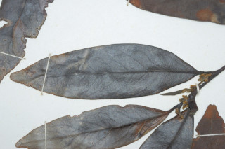
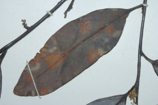
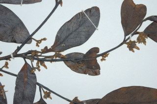
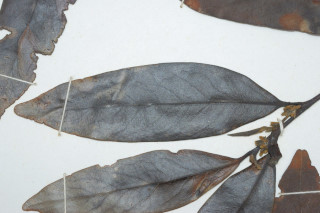
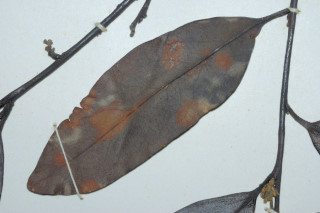
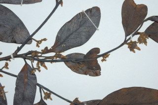

Moderate sized trees, up to 15 m tall.
15 ಮೀ ಎತ್ತರದವರೆಗೆ ಬೆಳೆಯುವ ಸಾಧಾರಣ ಗಾತ್ರದ ಮರಗಳು.
15 മീറ്റര്വരെ ഉയരമുളള ഇടത്തരം മരം.
மரம் 15 மீ. உயரம் வரை வளரக்கூடியது.
Bark black, peeling off in irregular flakes.
ತೊಗಟೆ ಕಪ್ಪಾಗಿದ್ದು ಅನಿಯತವಾಗಿ ಸುಲಿಯುವ ಮಾದರಿಯಲ್ಲಿರುತ್ತವೆ.
ക്രമരഹിതമായി അടര്ന്ന് പോകുന്ന, കറുത്ത പുറംതൊലി
மரத்தின் பட்டை கருப்பு நிறம், மரத்தின் பட்டை ஒழுங்கற்ற முறையில் உரியக்கூடியது.
Branchlets terete, glabrous.
ಕಿರುಕೊಂಬೆಗಳು ದುಂಡಾಗಿದ್ದು ರೋಮರಹಿತವಾಗಿರುತ್ತವೆ.
ഉരുണ്ടതും അരോമിലവുമായ ഉപശാഖകള്.
சிறிய நுனிக்கிளைகள் குறுக்குவெட்டுத் தோற்றத்தில் வளையமானது, உரோமங்களற்றது.
Leaves simple, alternate, distichous; petiole 0.5-0.7 cm long, glabrous; lamina 5.5-9 x 2-3.8 cm, lanceolate to narrow elliptic-oblong, apex acute with blunt tip, base acute, coriaceous, shining; secondary_nerves 8-11 pairs; tertiary_nerves reticulate, prominent on both surfaces.
ಎಲೆಗಳು ಸರಳವಾಗಿದ್ದು ಪರ್ಯಾಯ ಹಾಗೂ ಸುತ್ತು ಜೋಡನಾ ವ್ಯವಸ್ಥೆ ಯಲ್ಲಿದ್ದು ಕಾಂಡದ ಎರಡೂ ಕಡೆಯ ಎದುರು ಬದರಿನ ಸಾಲಿನಲ್ಲಿರುತ್ತವೆ; ಎಲೆ ತೊಟ್ಟುಗಳು 0.5 ರಿಂದ 0.7 ಸೆಂ.ಮೀ. ಉದ್ದವಿದ್ದು ರೋಮರಹಿತವಾಗಿರುತ್ತವೆ; ಪತ್ರಗಳು 5.5 -9 X 2 -3.8 ಸೆಂ.ಮೀ. ಗಾತ್ರ ಹೊಂದಿದ್ದು ಭರ್ಜಿಯಿಂದ ಹಿಡಿದು ಸಂಕುಚಿತ ಅಂಡವೃತ್ತ – ಧೀರ್ಘಚತುರಸ್ರದ ಆಕಾರದಲ್ಲಿದ್ದು ಮೊಂಡು ಅಗ್ರವುಳ್ಳ ಚೂಪಾದ ತುದಿ, ಚೂಪಾದ ಬುಡ, ತೊಗಲನ್ನೋಲುವ ಮೇಲ್ಮೈ ಹಾಗೂ ಹೊಳಪನ್ನು ಹೊಂದಿರುತ್ತವೆ;ಎರಡನೇ ದರ್ಜೆಯ ನಾಳಗಳು 8-11 ಜೋಡಿಗಳಿರುತ್ತವೆ;ಮೂರನೇ ದರ್ಜೆಯ ನಾಳಗಳು ಜಾಲಬಂಧನಾಳ ವಿನ್ಯಾಸದಲ್ಲಿದ್ದು ಎಲೆಯ ಎರಡೂ ಬದಿಯಲ್ಲಿ ಪ್ರಮುಖವಾಗಿರುತ್ತವೆ.
ലഘുവായ ഇലകള്; ഏകാന്തരമായി, തണ്ടിന്റെ ഇരുഭാഗത്ത് മാത്രമായി അടുക്കിയിരിക്കുന്നു; അരോമിലമായ ഇലഞെട്ടിന് 0.5 സെ.മീ മുതല് 0.7 സെ.മീ വരെ നീളം; പത്രഫലകത്തിന് 5.5 സെ.മീ മുതല് 9 സെ.മീ വരെ നീളവും 2 സെ.മീ മുതല് 3.8 സെ.മീ വരെ വീതിയും, കുന്താകാരംതൊട്ട് വീതികുറഞ്ഞ ദീര്ഘവൃത്തീയ ആയതാകാരം വരേയുമാണ്, പത്രാഗ്രം മുനപ്പില്ലാത്ത നിശിതാഗ്രമാണ്, പത്രാധാരം നിശിതമാമ്, ചര്മ്മില പ്രകൃതം, തിളങ്ങുന്നതാണ്; 8 മുതല് 11 വരെ ജോഡി ദ്വിതീയ ഞരമ്പുകള്; ഇരുഭാഗത്തും വ്യക്തമായ വിധത്തില് ജാലിതമായിട്ടുളള ത്രീതീയഞരമ്പുകള്.
இலைகள் தனித்தவை, மாற்றுஅடுக்கமானவை, இருநெடுக்கு வரிசையிலையடுக்கம் (டைஸ்டிக்கஸ்); இலைக்காம்பு 0.5-0.7 செ.மீ. நீளமானது, உரோமங்களற்றது; இலை அலகு 5.5-9 X 2-3.8 செ.மீ., ஈட்டி வடிவம் முதல் குறுகிய நீள்வட்டம்-நீள்சதுரம், அலகின் நுனி வால் போன்று நீண்டது மற்றும் முனை மழுங்கியது, அலகின் தளம் கூரியது, கோரியேசியஸ் பளபளப்பானது; இரண்டாம் நிலை நரம்புகள் 8-11 ஜோடிகள்; மூன்றாம் நிலை நரம்புகள் வலைப்பின்னல் அமைப்பு கொண்டது, கீழ்பரப்பு மற்றும் மேற்பரப்பிலும் நரம்புகள் தெளிவாக காணப்படும்.
Flowers unisexual, cream colored; male inflorescence in few-flowered axillary cymes; female flowers solitary.
ಹೂಗಳು ಏಕಲಿಂಗಿಗಳಾಗಿದ್ದು ಕೆನೆ ಬಣ್ಣ ಹೊಂದಿರುತ್ತವೆ; ಗಂಡು ಪುಷ್ಪಮಂಜರಿಕೆಲವು ಹೂಗಳನ್ನೊಳಗೊಂಡ ಮಧ್ಯಾರಂಭಿ ಪುಷ್ಪಮಂಜರಿಯಲ್ಲಿರುತ್ತವೆ; ಹೆಣ್ಣು ಹೂಗಳು ಒಂಟಿಯಾಗಿರುತ್ತವೆ.
ഏകലിംഗികളായ പൂക്കള് ക്രീം നിറത്തിലുളളവയാണ്; ആണ്പൂങ്കുലകള് ഏതാനും പൂക്കള്മാത്രമുളള കക്ഷീയ സൈമുകളാണ്; പെണ്പൂക്കള് ഒറ്റക്കായുണ്ടാകുന്നു.
ஓர்பால் மலர்கள், கிரீம் நிறமான மலர்கள்; ஆண் மஞ்சரி சில மலர்களை கொண்ட இலைக்கோணங்களில் காணப்படும் சைம்; பெண்மலர்கள் தனித்தவை.
Berry, globose, 2.5 cm in diameter; seeds 4 oblong, ruminate.
ಕಾಯಿಗಳು ಗೋಳಾಕಾರದಲ್ಲಿದ್ದು 2.5 ಸೆಂ.ಮೀ ವ್ಯಾಸವನ್ನು ಹೊಂದಿರುವ ಬೆರ್ರಿ ಮಾದರಿಯವು; ಬೀಜಗಳು 4 ಇದ್ದು ಚತುರಸ್ರಾಕಾರದಲ್ಲಿರುತ್ತವೆ.
കായ 2.5 സെ.മീ കുറുകേയുളള, ഗോളാകാര ബെറിയാണ്; റൂമിനേറ്റ് ആയ, 4 ആയതാകാരത്തിലുളള വിത്തുകള്.
முழுச்சதைகனி (பெர்ரி), உருண்டையானது, 2.5 செ.மீ. குறுக்களவுடையது, விதைகள் நான்கு, நீள்சதுரமானது, ரூமினேட்
 




